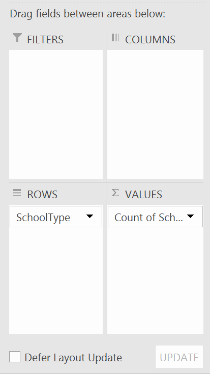

Chapter 6 dplyr
6.1 Packages
One of the great things about R (and lots of other open source programming languages) is that you can add in extra functionality really easy. These extra functions come in the form of packages.
To get a package, we first need to install it. This can be done in the console, as once installed, we don’t need to reinstall every time we start a new session of R.
We are going to install a package called dplyr, a package to manipulate data.
install.packages("dplyr")A lot of funny stuff will come up in your Console, ignore it, it’s all normal (or should be!).
Once we’ve installed it, we have to load the package. This we do have to do every time we start a new session of R.
#Load required libraries
library(dplyr)6.2 The pipe
The first feature of dplyr is the pipe: %>%.
The pipe allows you turn code into the format of a recipe, carrying out a series of functions one after another. For example, we could turn the name of the school (School_Name) into a character from a factor, as it is not a categorical variable where the records could take one of a fixed number of entries.
In base R, this would look like:
swfc_16$School_Name <- as.character(swfc_16$School_Name)In dplyr this looks like:
swfc_16$School_Name <- swfc_16$School_Name %>% as.character()The pipe gives a more logical approach - putting the ingredients (swfc_16$Perc_Teachers_QTS) into recipe steps. We don’t have to include arguments which specify which object we’re operating on, as this is specified when we input the ingredients.
Tip:
You can shortcut to a pipe by CTRL + SHIFT + M.
6.3 Joining
There are a number of types of joins that dplyr offers. We won’t go through them here as this isn’t what this course is about, but this post goes through them clearly. We will use a left join - keeping all rows on one dataframe, joining another on a certain variable where they match, and making all rows which don’t match ‘not applicable’.
We will create a dataframe which details whether a Government Office Region is in London or the Rest of England and then match it to the rest of the School Workforce Census.
#Create dataframe on whether region is in London or Rest of England
ldn_roe <- data.frame(Government_Office_Region_Name = c("East Midlands", "East of England", "Inner London",
"North East", "North West", "Outer London", "South East", "South West", "West Midlands", "Yorkshire and the Humber"),
ldn_roe = c("RoE","RoE","LDN","RoE","RoE","LDN","RoE","RoE","RoE","RoE"))
#Match to SWFC
swfc_16 <- left_join(swfc_16,LDN_RoE,by="Government_Office_Region_Name")We can also match on column names even if they columns are named differently. But first, we’ll remove the column that we’ve just added in using the ‘select’ function.
6.4 Selecting
The select function uses column names to select subsets of a dataframe. Individual columns can be selected, separated by columns, or groups of columns, with the starting and ending columns separated by a colon.
#Remove new column
swfc_16 <- select(swfc_16,LA_Number:Perc_FT_Temp_Filled_Posts)
#Or using 'the pipe'
swfc_16 <- swfc_16 %>%
select(LA_Number:Perc_FT_Temp_Filled_Posts)Now, we can change the name of the first ldn_roe column, and then match again.
#Change name of Government_Office_Region_Name
ldn_roe <- ldn_roe %>%
select(Region = Government_Office_Region_Name,
ldn_roe)
#Match to SWFC
swfc_16 <- left_join(swfc_16,ldn_roe,by=c("Government_Office_Region_Name"="Region"))6.5 Pivoting
Pivoting (grouping data by certain characteristics and then performing certain calculations - counts of each group or averages for each group) is a really popular feature in Excel, and can be replicated using dplyr.
We’re going to create two pivot tables:
- Count the number of each type of school
- Calculate the average % of teachers with Qualified Teacher Status for each school type
The image below shows the boxes from the Excel pivot table user interface with the entries to build the pivot table for the first of the list above.

#Calculate the number of schools by school type
school_type_count <- swfc_16 %>% #Set the name of the output object and feed in 'the ingredients' - swfc_16 in this instance
group_by(School_Type) %>% #Recipe step 1: Specifying the variable we want to group the data by
summarise(Count_Schools = n()) #Recipe step 2: Define what function we want to apply to the grouped data. Here we are doing a simple count - n(). We also specify the name of the new column, in this instance 'Count_Schools'Tip:
To prevent your lines of code being too long you can start new lines after things like %>%, ,, =, and <span class=“code”><-.
If you go to ‘Tools’, ‘Global Options’, ‘Code’, ‘Display’ there is an option called ‘Show margin’ which adds a margin after 80 characters as a default - try not to exceed this.
#Calculate average percentage of qualified teachers per school, grouped by school type
av_qts_schooltype <- swfc_16 %>% #Set the name of the output object and feed in 'the ingredients' - swfc_16 in this instance
group_by(School_Type) %>% #Recipe step 1: Specifying the variable we want to group the data by
summarise(Ave_Perc_QTS = mean(Perc_QTS_Teachers,na.rm=TRUE))
#Recipe step 2: Calculate the average percentage of qualified teachers for each group. The 'na.rm=TRUE' argument does not consider rows where the value is NA.6.6 Filtering
When we looked at conditional selections earlier, we were essentially looking at a way of filtering data. There’s a neater way of doing this with dplyr:
#Select all schools in Inner and Outer London
swfc_16_lon <- swfc_16 %>%
filter(grepl("London",Government_Office_Region_Name)) #The filtering function is unsurprisingly called 'filter()'
#Here, we're using a function called grepl, which finds all rows where the Government_Office_Region_Name column contains the string 'London'.6.7 Mutating
The mutate() function allows you to alter data in the dataframe, as we did a few sections ago. Let’s take the code above where we calculated the number of schools of each type of school, bolt on some more recipe steps, and calculate the percentage of schools in each group.
#Calculate the percentage of schools by school type
school_type_count <- swfc_16 %>%
group_by(School_Type) %>%
summarise(Count_Schools = n()) %>%
mutate(Perc_Schools = Count_Schools/sum(Count_Schools))Let’s break this down:
- We’ve used the mutate function
- We’ve created a new column called Perc_Schools
- Perc_Schools equals the count for each school type, divided by the total number of schools, calculated using sum()
We can also mutate a column without creating a new column:
#Calculate the percentage of schools by school type
school_type_count <- swfc_16 %>%
group_by(School_Type) %>%
summarise(Count_Schools = n()) %>%
mutate(Perc_Schools = Count_Schools/sum(Count_Schools)) %>%
mutate(Perc_Schools = round(Perc_Schools*100,1)) #Multiply Perc_Schools by 100 to get a percentage, and round to 1 decimal place.Activity A6.3: The big one - use dplyr to find out what percentage of secondary school (not including all through school) teaching assistants the East of England has. These are the functions you’ll need to run:
- A filter
- Pivoting using a sum
- Mutating
- Filtering on ‘East of England’
- Selecting the value column
- Using as.numeric() to return just one number
Hint: Write each step of code, run it, check it works, and then add the next recipe step in.